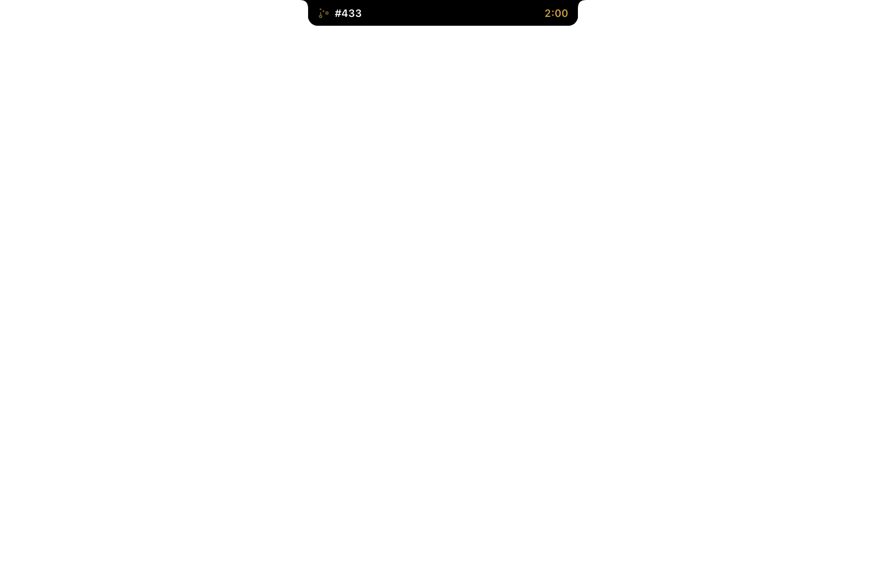

Queued the merge.
⌘
-Tab to GitHub.
Refresh.
Refresh.
Still merging.
Look up.
Code
File
Edit
View
Mon 12 Oct
10:41
GitIsle
Your pull requests, in the notch.
Merges land in the notch.
No tab. No refresh.
Every PR, one hover away.
Just what needs you.
Or see it as a board.
Your shipping, in numbers.
GitHub, Claude Code and Codex.
Know the second checks fail.
Code
File
Edit
View
Mon 12 Oct
10:41

GitIsle
Free and open source for macOS.
github.com/ppazosp/gitisle
One-line install, Homebrew, or build from source.